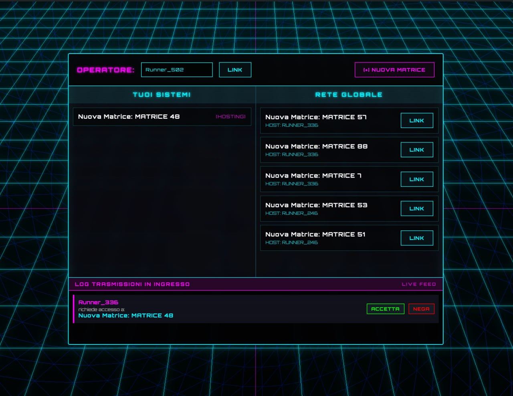

System Programming meets 3D Web Graphics
The entry point where users manage their identity and matches. It handles concurrent connection requests via a custom handshake protocol.
The game board uses Three.js raycasting for interaction. Every move is validated by the C server to prevent illegal plays and ensure state consistency across clients.
To ensure a consistent environment across different systems, the entire infrastructure is containerized using Docker & Docker Compose.
server_c: Isolate the C backend in a minimal Linux environment.node_bridge: Manages the WebSocket-to-TCP proxy.This setup allows deploying the multi-language stack with a single command: docker-compose up, managing internal networks and port mapping seamlessly.